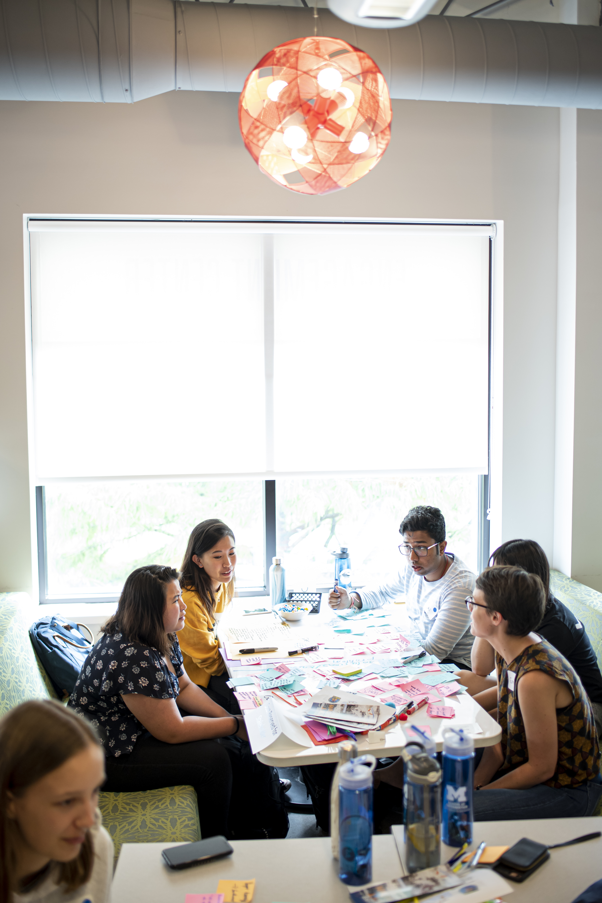

At the University of Michigan, we understand that mental health is an essential part of your overall wellbeing and academic success. Counseling and Psychological Services (CAPS) is here to support you through a wide range of services designed to help you thrive on campus and beyond. Whether you're seeking help for stress, anxiety, adjustment issues, or other mental health concerns, CAPS offers a confidential and welcoming environment for all students.
What is CAPS?
Counseling and Psychological Services aims to support students' psychological growth and emotional well-being through counseling, psychotherapy, preventive education, consultation, and outreach. By working with students, schools, colleges, and other campus units, it seeks to build a diverse, inclusive, and multicultural community while contributing to the mental health field.

Services offered by CAPS
- Individual Counseling
- Group Counseling and Workshops
- Crisis Services
- CAPS Chat Podcast

Individual Counseling
Meet one-on-one with a licensed counselor who can provide short-term support tailored to your unique needs. Whether you're dealing with stress, relationship issues, or emotional challenges, our counselors are here to help. Our trained counselors provide empathetic support and collaborate with you to develop effective coping strategies. In addition to addressing stress, relationship issues, and emotional challenges, our counseling services cover a wide range of concerns, including academic pressure, identity exploration, and mental health conditions. Our goal is to empower you with the tools and insights needed to thrive both personally and academically. Whether you're seeking guidance for a specific issue or looking to enhance your overall well-being, CAPS is committed to supporting your mental health journey. Sessions are based on your unique needs, ensuring that your concerns are heard and addressed in a personalized manner.

Group Counseling and Workshops
Participate in various group sessions that offer peer support and cover topics such as anxiety management, coping skills, and mindfulness. Workshops are designed to provide practical tools for managing stress and improving mental health.
Crisis Services
Access immediate support during a mental health crisis. CAPS offers crisis intervention services, available 24/7, to ensure you receive immediate care when you need it most.
CAPS Chat Podcast
Watch podcasts that discuss topics such as suicide prevention, time management, violence awareness, and more. Through these podcasts, students, faculty, and staff can gain valuable insights into issues such as suicide prevention, time management, and violence awareness, among others. Each episode features expert guests, including counselors, faculty members, and community leaders, who share their knowledge and experiences to help listeners navigate the complex landscape of mental health and well-being. The podcasts are designed to be accessible and informative, offering practical advice, coping strategies, and resources to support personal growth and resilience. Whether you're seeking guidance on managing stress, improving relationships, or enhancing your overall mental health, the CAPS Chat Podcast serves as an invaluable resource for the University of Michigan community.

How to access our services
- Initial Consultation: Begin with an initial phone consultation to discuss your concerns and determine the best course of action. To schedule, call us at 734-764-8312.
- Walk-In Services: For urgent matters, visit our walk-in center located at 530 South State Street. Our staff will ensure you receive timely support.
- Online Appointment Scheduling: Use our online portal to schedule appointments at your convenience.